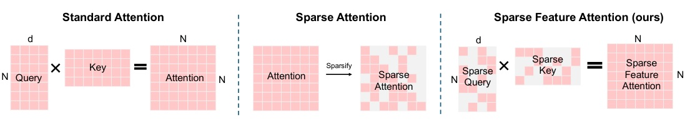
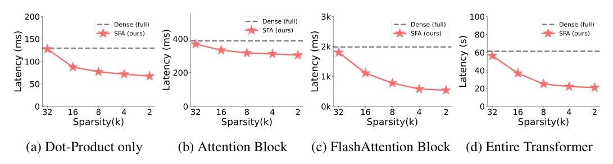
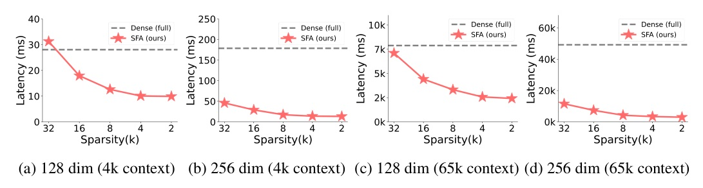
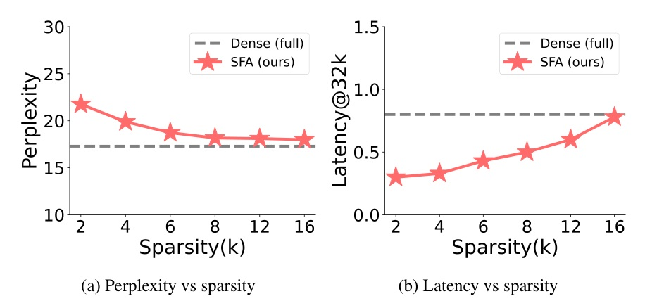
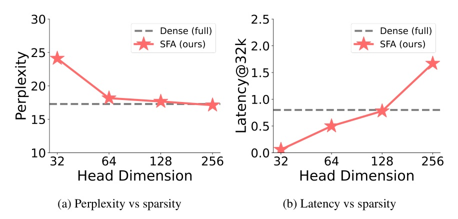

把注意力的稀疏性從 token 軸移到 feature 軸：保留全部 token pair，只讓 Q/K 啟動 Top-k feature。
SFA 不是少看 token；它是每一對 token 仍可互看，但只在少數 shared feature 上計分。
理論上把 QK 的 feature-dot 成本從 Θ(n2d) 壓到 Θ(n2k2/d)，再用 FlashSFA 避開 n x n score materialization。

Balanced support 下，非零 score edge 數 E 約等於 n2k2/d。
| Model | Method | Latency@128k | PPL | Avg-Acc |
|---|---|---|---|---|
| GPT2-124M | Dense full | 16.86 | 17.29 | 28.28 |
| GPT2-124M | SFA k=8 | 9.41 | 18.27 | 27.40 |
| Qwen3-0.6B | Dense full | 77.65 | 4.66 | 39.40 |
| Qwen3-0.6B | SFA k=16 | 34.20 | 4.81 | 38.94 |
短 embedding baseline 更快，但品質掉更多；SFA 的價值是 speed-quality balance。

| Training window | Method | Max-length Acc | Speed |
|---|---|---|---|
| 8k | Dense d=64 | 95% @8k | 1.0x |
| 8k | SFA k=2 | 98% @8k | 1.9x |
| 32k | Dense d=64 | 80% @32k | 1.0x |
| 32k | SFA k=8 | 82% @32k | 1.3x |

作者在 Appendix J 用 fp16/bf16 value、int8 index、int32 indptr 推導 CSR memory ratio。
真正支撐 SFA 的不是「稀疏一定好」，而是 feature 使用沒有坍縮。


| N | RTop-k ms | Ratio of attention forward |
|---|---|---|
| 1k | 0.221 | 10.51% |
| 4k | 0.589 | 2.10% |
| 16k | 2.080 | 1.90% |
| 65k | 8.080 | 0.51% |
Instead of dense d-dimensional queries and keys, SFA learns k-sparse codes in which each token activates only a handful of coordinates.
SFA 不是砍 token，而是讓每個 token 只啟動少數 Q/K feature coordinate，保留 token 覆蓋率。§1 p.2
The resulting scores are mathematically identical to computing softmax(Q_tilde K_tilde^T / sqrt(d))V, but with both compute and memory scaling as in SFA.
FlashSFA 的關鍵不是近似 softmax，而是用稀疏交集把同一個 SFA score 更省地算出來。§3.2 p.4
For d = 128 and k = 16 ... the ratio is k^2/d^2 = 1/64.
這是 SFA 的核心槓桿：省的是每一對 token 的 feature-dot 成本，而不是只省 token 數。§3.1 p.4
For the 16 Q-heads ... entropy ranges from 0.88 to 0.98 with an average of 0.94.
TopK 沒有明顯坍縮到少數 feature，這讓 sparse-feature 路線比 MoE 式硬 routing 更可信。App. F p.21
今天的結論：feature sparsity 是一條可以和 token sparsity 疊加的長 context 加速軸。